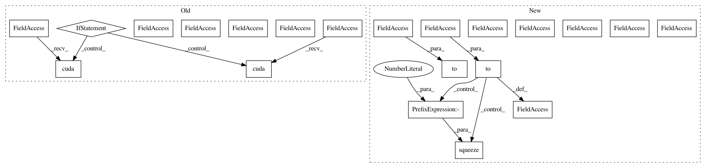

d5b0cd8e7960c247bb7c5b7c832358f8831780fb,ch15/05_train_acktr.py,,,#,55
Before Change
net_act = model.ModelActor(envs[0].observation_space.shape[0], envs[0].action_space.shape[0])
net_crt = model.ModelCritic(envs[0].observation_space.shape[0])
if args.cuda:
net_act.cuda()
net_crt.cuda()
print(net_act)
print(net_crt)
writer = SummaryWriter(comment="-acktr_" + args.name)
agent = model.AgentA2C(net_act, cuda=args.cuda)
exp_source = ptan.experience.ExperienceSourceFirstLast(envs, agent, GAMMA, steps_count=REWARD_STEPS)
opt_act = kfac.KFACOptimizer(net_act, lr=LEARNING_RATE_ACTOR)
opt_crt = optim.Adam(net_crt.parameters(), lr=LEARNING_RATE_CRITIC)
batch = []
best_reward = None
with ptan.common.utils.RewardTracker(writer) as tracker:
with ptan.common.utils.TBMeanTracker(writer, batch_size=100) as tb_tracker:
for step_idx, exp in enumerate(exp_source):
rewards_steps = exp_source.pop_rewards_steps()
if rewards_steps:
rewards, steps = zip(*rewards_steps)
tb_tracker.track("episode_steps", np.mean(steps), step_idx)
tracker.reward(np.mean(rewards), step_idx)
if step_idx % TEST_ITERS == 0:
ts = time.time()
rewards, steps = test_net(net_act, test_env, cuda=args.cuda)
print("Test done in %.2f sec, reward %.3f, steps %d" % (
time.time() - ts, rewards, steps))
writer.add_scalar("test_reward", rewards, step_idx)
writer.add_scalar("test_steps", steps, step_idx)
if best_reward is None or best_reward < rewards:
if best_reward is not None:
print("Best reward updated: %.3f -> %.3f" % (best_reward, rewards))
name = "best_%+.3f_%d.dat" % (rewards, step_idx)
fname = os.path.join(save_path, name)
torch.save(net_act.state_dict(), fname)
best_reward = rewards
batch.append(exp)
if len(batch) < BATCH_SIZE:
continue
states_v, actions_v, vals_ref_v = \
common.unpack_batch_a2c(batch, net_crt, last_val_gamma=GAMMA ** REWARD_STEPS, cuda=args.cuda)
batch.clear()
opt_crt.zero_grad()
After Change
envs = [gym.make(args.env) for _ in range(ENVS_COUNT)]
test_env = gym.make(args.env)
net_act = model.ModelActor(envs[0].observation_space.shape[0], envs[0].action_space.shape[0]).to(device)
net_crt = model.ModelCritic(envs[0].observation_space.shape[0]).to(device)
print(net_act)
print(net_crt)
writer = SummaryWriter(comment="-acktr_" + args.name)
agent = model.AgentA2C(net_act, device=device)
exp_source = ptan.experience.ExperienceSourceFirstLast(envs, agent, GAMMA, steps_count=REWARD_STEPS)
opt_act = kfac.KFACOptimizer(net_act, lr=LEARNING_RATE_ACTOR)
opt_crt = optim.Adam(net_crt.parameters(), lr=LEARNING_RATE_CRITIC)
batch = []
best_reward = None
with ptan.common.utils.RewardTracker(writer) as tracker:
with ptan.common.utils.TBMeanTracker(writer, batch_size=100) as tb_tracker:
for step_idx, exp in enumerate(exp_source):
rewards_steps = exp_source.pop_rewards_steps()
if rewards_steps:
rewards, steps = zip(*rewards_steps)
tb_tracker.track("episode_steps", np.mean(steps), step_idx)
tracker.reward(np.mean(rewards), step_idx)
if step_idx % TEST_ITERS == 0:
ts = time.time()
rewards, steps = test_net(net_act, test_env, device=device)
print("Test done in %.2f sec, reward %.3f, steps %d" % (
time.time() - ts, rewards, steps))
writer.add_scalar("test_reward", rewards, step_idx)
writer.add_scalar("test_steps", steps, step_idx)
if best_reward is None or best_reward < rewards:
if best_reward is not None:
print("Best reward updated: %.3f -> %.3f" % (best_reward, rewards))
name = "best_%+.3f_%d.dat" % (rewards, step_idx)
fname = os.path.join(save_path, name)
torch.save(net_act.state_dict(), fname)
best_reward = rewards
batch.append(exp)
if len(batch) < BATCH_SIZE:
continue
states_v, actions_v, vals_ref_v = \
common.unpack_batch_a2c(batch, net_crt, last_val_gamma=GAMMA ** REWARD_STEPS, device=device)
batch.clear()
opt_crt.zero_grad()
value_v = net_crt(states_v)
loss_value_v = F.mse_loss(value_v.squeeze(-1), vals_ref_v)
loss_value_v.backward()
opt_crt.step()
In pattern: SUPERPATTERN
Frequency: 3
Non-data size: 21
Instances
Project Name: PacktPublishing/Deep-Reinforcement-Learning-Hands-On
Commit Name: d5b0cd8e7960c247bb7c5b7c832358f8831780fb
Time: 2018-04-29
Author: max.lapan@gmail.com
File Name: ch15/05_train_acktr.py
Class Name:
Method Name:
Project Name: PacktPublishing/Deep-Reinforcement-Learning-Hands-On
Commit Name: d5b0cd8e7960c247bb7c5b7c832358f8831780fb
Time: 2018-04-29
Author: max.lapan@gmail.com
File Name: ch15/01_train_a2c.py
Class Name:
Method Name:
Project Name: PacktPublishing/Deep-Reinforcement-Learning-Hands-On
Commit Name: 1e9c3ee592be5e11dcce932a73009488d6f85474
Time: 2018-04-29
Author: max.lapan@gmail.com
File Name: ch17/02_imag.py
Class Name:
Method Name: